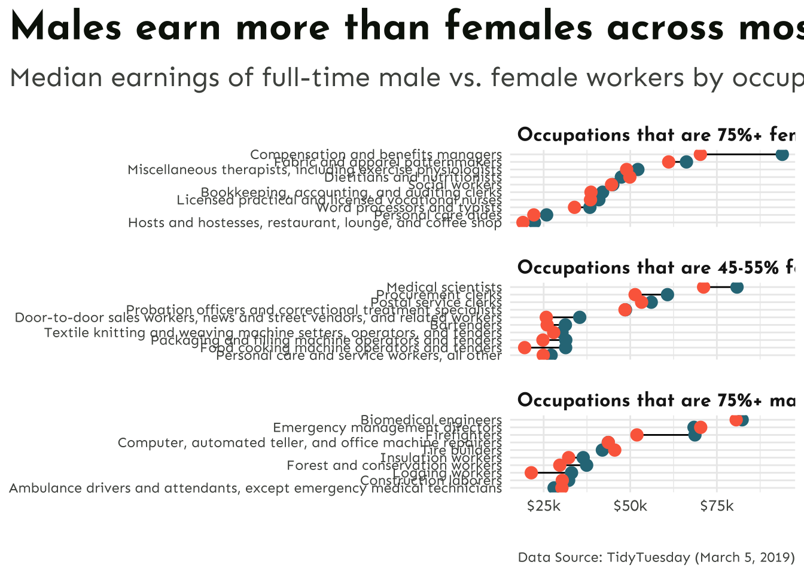
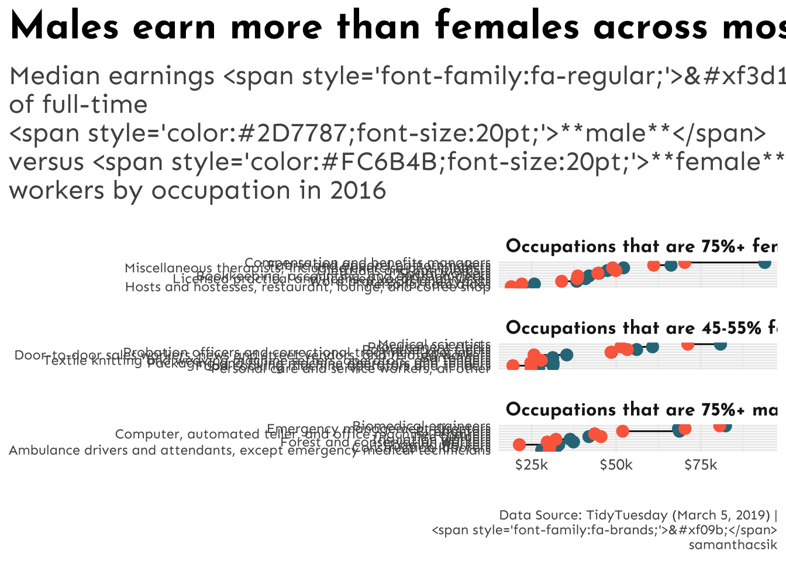
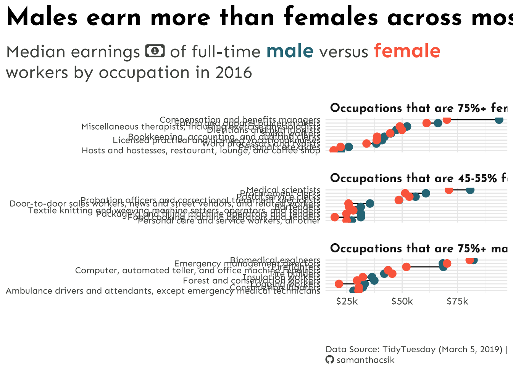

── Attaching core tidyverse packages ──────────────────────── tidyverse 2.0.0 ──
✔ dplyr 1.1.4 ✔ readr 2.1.5
✔ forcats 1.0.0 ✔ stringr 1.5.1
✔ ggplot2 3.4.4 ✔ tibble 3.2.1
✔ lubridate 1.9.3 ✔ tidyr 1.3.1
✔ purrr 1.0.2
── Conflicts ────────────────────────────────────────── tidyverse_conflicts() ──
✖ dplyr::filter() masks stats::filter()
✖ dplyr::lag() masks stats::lag()
ℹ Use the conflicted package (<http://conflicted.r-lib.org/>) to force all conflicts to become errors
ggplot(penguins, aes(x = bill_length_mm, y = bill_depth_mm)) +geom_point() +labs(title ="This title is serif font",subtitle ="This subtitle is mono font",x ="This axis label is sans font (default)",y ="This axis is also sans font (default)") +theme(plot.title =element_text(family ="serif", size =30),plot.subtitle =element_text(family ="mono", size =25),axis.title =element_text(family ="sans", size =22),axis.text.x =element_text(family ="serif", face ="bold", size =18),axis.text.y =element_text(family ="mono", face ="italic", size =18) )
Rows: 2088 Columns: 12
── Column specification ────────────────────────────────────────────────────────
Delimiter: ","
chr (3): occupation, major_category, minor_category
dbl (9): year, total_workers, workers_male, workers_female, percent_female, ...
ℹ Use `spec()` to retrieve the full column specification for this data.
ℹ Specify the column types or set `show_col_types = FALSE` to quiet this message.
##~~~~~~~~~~~~~~~~~~~~~~~~~~~~~~~~~~~~~~~~~~~~~~~~~~~~~~~~~~~~~~~~~~~~~~~~~~~~~~## wrangle data ----##~~~~~~~~~~~~~~~~~~~~~~~~~~~~~~~~~~~~~~~~~~~~~~~~~~~~~~~~~~~~~~~~~~~~~~~~~~~~~~jobs_clean <- jobs |># add cols (needed for dumbbell plot) ----mutate(percent_male =100- percent_female, # % of females within each industry was already includeddifference_earnings = total_earnings_male - total_earnings_female) |># diff in earnings between M & F# rearrange columns ----relocate(year, major_category, minor_category, occupation, total_workers, workers_male, workers_female, percent_male, percent_female, total_earnings, total_earnings_male, total_earnings_female, difference_earnings, wage_percent_of_male) |># drop rows with missing earning data ----drop_na(total_earnings_male, total_earnings_female) |># make occupation a factor ----mutate(occupation =as.factor(occupation)) |># ---- this next step is for creating our dumbbell plots ----# classify jobs by percentage male or female ----mutate(group_label =case_when( percent_female >=75~"Occupations that are 75%+ female", percent_female >=45& percent_female <=55~"Occupations that are 45-55% female", percent_male >=75~"Occupations that are 75%+ male" ))##~~~~~~~~~~~~~~~~~~~~~~~~~~~~~~~~~~~~~~~~~~~~~~~~~~~~~~~~~~~~~~~~~~~~~~~~~~~~~~## create subset df ----##~~~~~~~~~~~~~~~~~~~~~~~~~~~~~~~~~~~~~~~~~~~~~~~~~~~~~~~~~~~~~~~~~~~~~~~~~~~~~~#....guarantee the same random samples each time we run code.....set.seed(0)#.........get 10 random jobs that are 75%+ female (2016).........f75 <- jobs_clean |>filter(year ==2016, group_label =="Occupations that are 75%+ female") |>slice_sample(n =10)#..........get 10 random jobs that are 75%+ male (2016)..........m75 <- jobs_clean |>filter(year ==2016, group_label =="Occupations that are 75%+ male") |>slice_sample(n =10)#........get 10 random jobs that are 45-55%+ female (2016).......f50 <- jobs_clean |>filter(year ==2016, group_label =="Occupations that are 45-55% female") |>slice_sample(n =10)#.......combine dfs & relevel factors (for plotting order).......subset_jobs <-rbind(f75, m75, f50) |>mutate(group_label =fct_relevel(group_label, "Occupations that are 75%+ female","Occupations that are 45-55% female", "Occupations that are 75%+ male"))plot <-ggplot(subset_jobs) +geom_segment(aes(x = total_earnings_female, xend = total_earnings_male,y =fct_reorder(occupation, total_earnings), yend = occupation)) +geom_point(aes(x = total_earnings_male, y = occupation),color ="#CD93D8", size =3.25) +geom_point(aes(x = total_earnings_female, y = occupation),color ="#6A1E99", size =3.25) +facet_wrap(~group_label, nrow =3, scales ="free_y") +scale_x_continuous(labels = scales::label_dollar(scale =0.001, suffix ="k"),breaks =c(25000, 50000, 75000, 100000, 125000))plot
plot +labs(title ="Males earn more than females across most occupations",subtitle ="Median earnings of full-time male vs. female workers by occupation in 2016",caption ="Data Source: TidyTuesday (March 5, 2019)") +theme_minimal() +theme(plot.title.position ="plot", # shifts title to the leftmost side of the whole plot areaplot.title =element_text(face ="bold",size =25,color = earnings_pal["dark_text"]),plot.subtitle =element_text(size =17,color = earnings_pal["light_text"],margin =margin(t =0.5, r =0, b =1, l =0, unit ="lines")), # add whitespace for "breathing room"# caption light and italicizedplot.caption =element_text(face ="italic",color = earnings_pal["light_text"],margin =margin(t =3, r =0, b =0, l =0, unit ="lines")),strip.text.x =element_text(face ="bold",size =12,hjust =0),panel.spacing.y =unit(x =1, "lines"),axis.text =element_text(color = earnings_pal["light_text"]),axis.text.x =element_text(size =10),axis.title =element_blank() )
#..........................import fonts..........................# `name` is the name of the font as it appears in Google Fonts# `family` is the user-specified id that you'll use to apply a font in your ggpplotfont_add_google(name ="Josefin Sans", family ="josefin")font_add_google(name ="Sen", family ="sen")#................enable {showtext} for rendering.................# this allows all computer types to render!showtext_auto()#................let's plot................plot +labs(title ="Males earn more than females across most occupations",subtitle ="Median earnings of full-time male vs. female workers by occupation in 2016",caption ="Data Source: TidyTuesday (March 5, 2019)") +theme_minimal() +theme(plot.title.position ="plot",plot.title =element_text(family ="josefin",face ="bold",size =25,color = earnings_pal["dark_text"]),plot.subtitle =element_text(family ="sen",size =17,color = earnings_pal["light_text"],margin =margin(t =0.5, r =0, b =1, l =0, unit ="lines")),plot.caption =element_text(family ="sen",face ="italic", # NOTE: this no longer applies since the typeface "Sen" does not exist in an italic font stylecolor = earnings_pal["light_text"],margin =margin(t =3, r =0, b =0, l =0, unit ="lines")),strip.text.x =element_text(family ="josefin",face ="bold",size =12,hjust =0),panel.spacing.y =unit(x =1, "lines"),axis.text =element_text(family ="sen",color = earnings_pal["light_text"]),axis.text.x =element_text(size =10),axis.title =element_blank() )

add icons
##~~~~~~~~~~~~~~~~~~~~~~~~~~~~~~~~~~~~~~~~~~~~~~~~~~~~~~~~~~~~~~~~~~~~~~~~~~~~~~## setup ----##~~~~~~~~~~~~~~~~~~~~~~~~~~~~~~~~~~~~~~~~~~~~~~~~~~~~~~~~~~~~~~~~~~~~~~~~~~~~~~#..........................load packages.........................library(tidyverse)library(showtext)#......................import Google Fonts.......................# `name` is the name of the font as it appears in Google Fonts# `family` is the user-specified id that you'll use to apply a font in your ggpplotfont_add_google(name ="Josefin Sans", family ="josefin")font_add_google(name ="Sen", family ="sen")#....................import Font Awesome fonts...................font_add(family ="fa-brands",regular = here::here("week6", "fonts", "Font Awesome 6 Brands-Regular-400.otf"))font_add(family ="fa-regular",regular = here::here("week6", "fonts", "Font Awesome 6 Free-Regular-400.otf")) font_add(family ="fa-solid",regular = here::here("week6","fonts", "Font Awesome 6 Free-Solid-900.otf"))#................enable {showtext} for rendering.................showtext_auto()#.........................create caption.........................github_icon <-""github_username <-"samanthacsik"caption <- glue::glue("Data Source: TidyTuesday (March 5, 2019) | <span style='font-family:fa-brands;'>{github_icon};</span> {github_username}")#........................create subtitle.........................money_icon <-""subtitle <- glue::glue("Median earnings <span style='font-family:fa-regular;'>{money_icon};</span> of full-time <span style='color:#2D7787;font-size:20pt;'>**male**</span> versus <span style='color:#FC6B4B;font-size:20pt;'>**female**</span> workers by occupation in 2016")plot +labs(title ="Males earn more than females across most occupations",subtitle = subtitle,caption = caption) +theme_minimal() +theme(plot.title.position ="plot",plot.title =element_text(family ="josefin",face ="bold",size =25),plot.subtitle =element_text(family ="sen",size =17,color = earnings_pal["light_text"],margin =margin(t =0.5, r =0, b =1, l =0, unit ="lines")),plot.caption =element_text(family ="sen",face ="italic", # NOTE: this no longer applies since the typeface "sen" does not exist in an italic font stylecolor = earnings_pal["light_text"],margin =margin(t =3, r =0, b =0, l =0, unit ="lines")),strip.text.x =element_text(family ="josefin",face ="bold",size =12,hjust =0),panel.spacing.y =unit(1, "lines"),axis.text =element_text(family ="sen",color = earnings_pal["light_text"]),axis.text.x =element_text(size =10),axis.title =element_blank() )

plot +labs(title ="Males earn more than females across most occupations",subtitle = subtitle,caption = caption) +theme_minimal() +theme(plot.title.position ="plot",plot.title =element_text(family ="josefin",face ="bold",size =25),plot.subtitle = ggtext::element_textbox_simple(family ="sen",size =17,color = earnings_pal["light_text"],margin =margin(t =0.5, r =0, b =1, l =0, unit ="lines")),plot.caption = ggtext::element_textbox_simple(family ="sen",face ="italic", # NOTE: this no longer applies since the typeface "sen" does not exist in an italic font stylecolor = earnings_pal["light_text"],margin =margin(t =3, r =0, b =0, l =0, unit ="lines")),strip.text.x =element_text(family ="josefin",face ="bold",size =12,hjust =0),panel.spacing.y =unit(1, "lines"),axis.text =element_text(family ="sen",color = earnings_pal["light_text"]),axis.text.x =element_text(size =10),axis.title =element_blank() )

# We also need to tell reader what our colors mean!! Using the <span> tag#........................create subtitle.........................money_icon <-""subtitle <- glue::glue("Median earnings <span style='font-family:fa-regular;'>{money_icon};</span> of full-time <span style='color:#2D7787;font-size:20pt;'>**male**</span> versus <span style='color:#FC6B4B;font-size:20pt;'>**female**</span> workers by occupation in 2016")